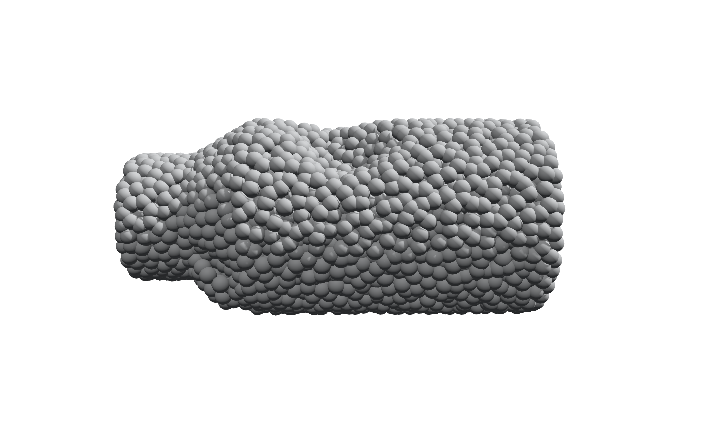
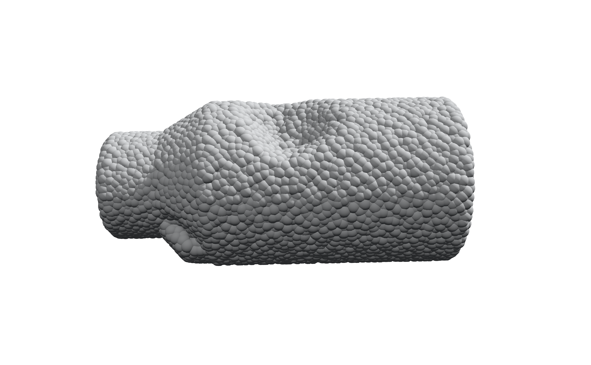

Point cloud → shaded spheres
Bead Lab is a static, single-page viewer built with Three.js. Drop in a PLY file, tune lighting and materials, orbit the camera, and export a PNG — no build step, no backend, no upload.
The repository ships with two example point clouds of the same shape at
different densities. Each render below was produced by loading the matching
examples/ file into Bead Lab with default studio lighting.


Both files describe the same stepped-cylinder shape at different
point densities. Load either one in Bead Lab, then import
examples/sample_bead_preset.json
(Preset → import .json) to reproduce the bead size, lighting, and camera angle used above.
Presets store appearance and camera settings only, not point coordinates.
Every point becomes a shaded sphere via instanced rendering, with adjustable bead size and tessellation.
Start from a built-in sample or generate a cylinder, stepped cylinder, sphere, torus, or box without any input file.
Directional key light, ambient fill, soft shadows, optional ground plane, and background color presets.
Shading estimated from neighboring points, with key-light, viewer, or up-axis tint modes.
Orbit, zoom, independent object rotation, and auto-rotate — separate from the lighting direction.
Save the current canvas view as a PNG, and export, import, or copy appearance settings as JSON.
beed_lab.html directly in a desktop browser with WebGL support.
Internet access is needed once, to load Three.js r128 from cdnjs.examples/sample_pcd_3000.ply from the gallery above first.examples/sample_bead_preset.json onto the view to match the bead size,
lighting, and camera angle used in the reference renders above.# or serve the repository locally — no build step required python3 -m http.server 8000 --bind 127.0.0.1 # then visit http://localhost:8000/beed_lab.html
Input is PLY, not the PCL .pcd format, and only
vertex positions are used. Loading and normal estimation run on the main thread, so very
large clouds can pause the interface — start with the 3,000-point example and increase
complexity gradually. Full format support, limitations, and repository layout are
documented in the README.
{kind=link}
{kind=link}